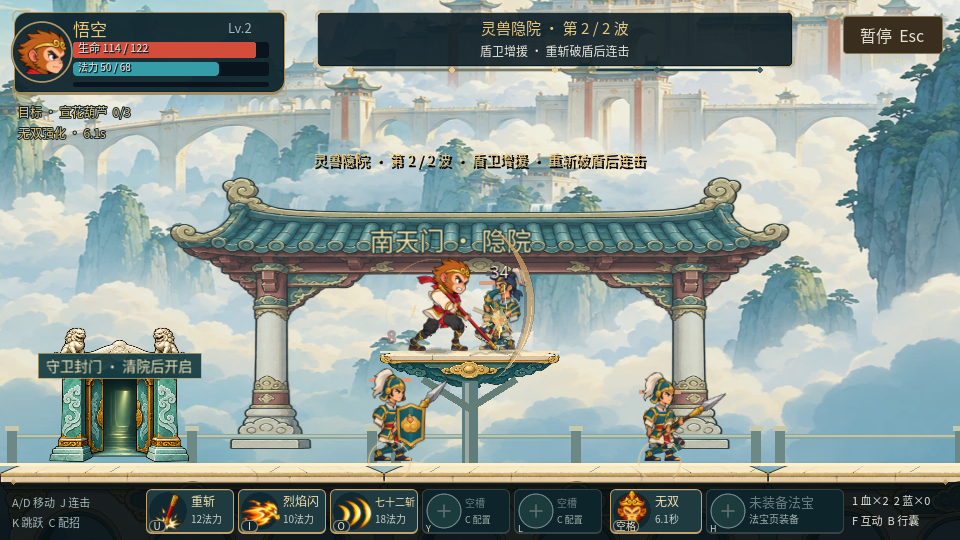
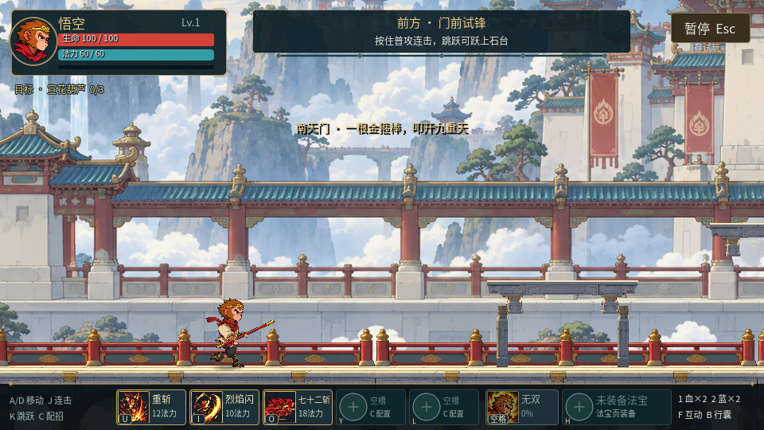
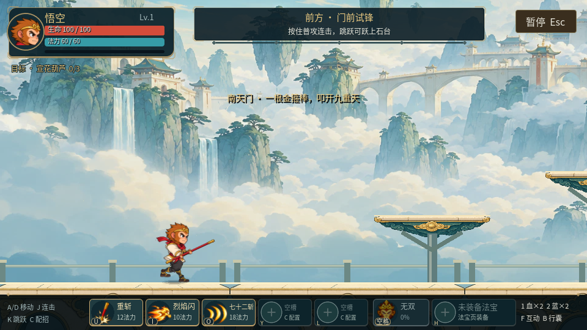

悟空传 / 南天门 / R9
翻身、挥棒，重回南天门
悟空重新绘制造型和分件，跳跃加入收腿翻身、二跳接续与展开落地。守军、巨灵神、云桥和门楼也一同收紧轮廓与色块，让角色和危险更容易辨认。
电脑浏览器 · 固定入口保留独立试玩进度，可自由选关。跳跃物理、伤害、消耗和无敌规则沿用原版。
实际战斗画面


R8：建筑和碎纹理偏密
R9：降低背景干扰，突出角色与可站表面关闭特效，看跑跳和握棒
9秒原生动作样片；三套衣装同一套骨架，包含首跳、二跳、空中接招、受击和三连收棒。控制动作夹具，用于检查衔接。
守军与巨灵神
12秒原生无特效动作样片，检查步态、持盾、拉弓和巨灵神蓄力/落斧/回收。原攻击时刻保持。
相同输入，前后对照
R8 · 同一组按键R9 · 翻身、动作和画面
两段各12秒，以相同起始位置、随机种子和按键录制；用于比较表现，不是自然通关。
主路、隐院与巨灵神完整流程
自动按键走完真实关卡，未额外授予位置、生命、法力、装备或无敌。录像采用固定帧录制，其时长不是新玩家通关时长，也不能作为浏览器帧率证明。
本轮已检查原生实际尺寸和动作关键帧、战斗/存档回归及发布资源。浏览器自动操作被当前 Work 设置关闭，浏览器首次加载、刷新恢复和帧率仍待实际试玩检验。新素材由 image_gen 原创生成，提示和来源随工程保存。